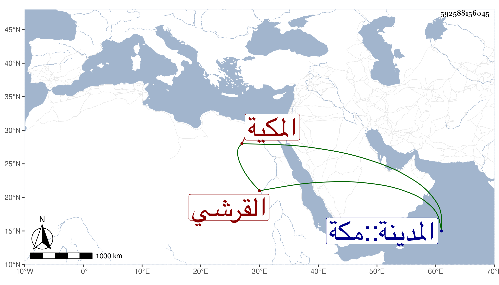

0902Sakhawi.DawLamic.ITO20230111-ara1.EIS1600.592588156045
Biography ID: 592588156045
781
منصورة ابنة المحب أحمد بن الجمال محمد بن عبد الله بن ظهيرة بن أحمد ابن عطية بن ظهيرة أم مروان القرشي المكية ، وأمها الشريفة كمالية ابنة عبد الرحمن الفاسي . ولدت في ذى الحجة سنة تسع عشرة وثمانمائة بودان بين الحرمين وأمها متوجهة للزيارة النبوية ، وأجاز لها جماعة منهم ابن سلامة وابن طولوبغا وابن الجزري .
